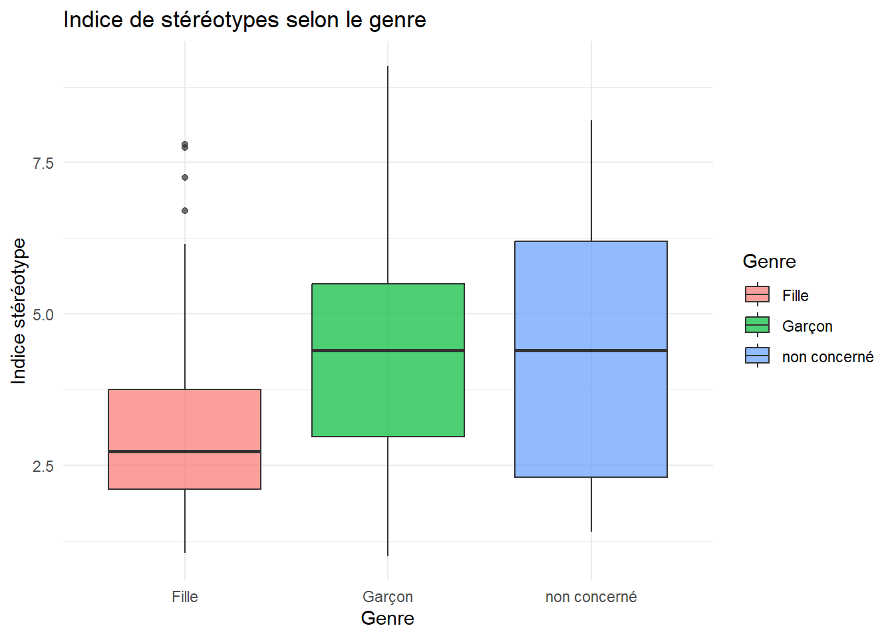
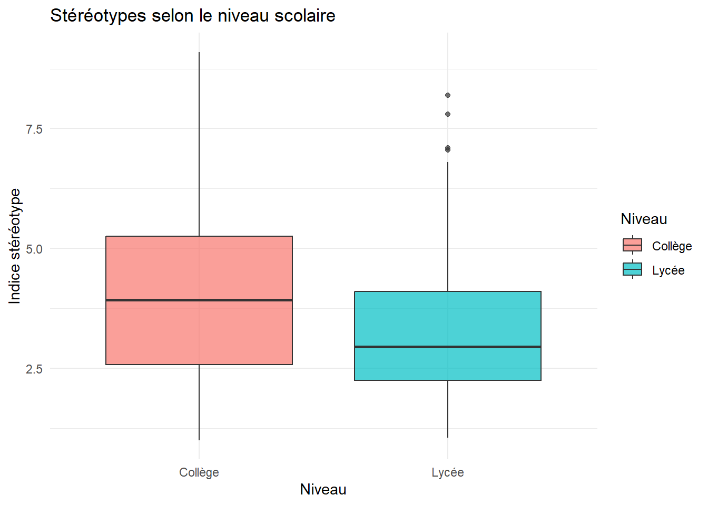
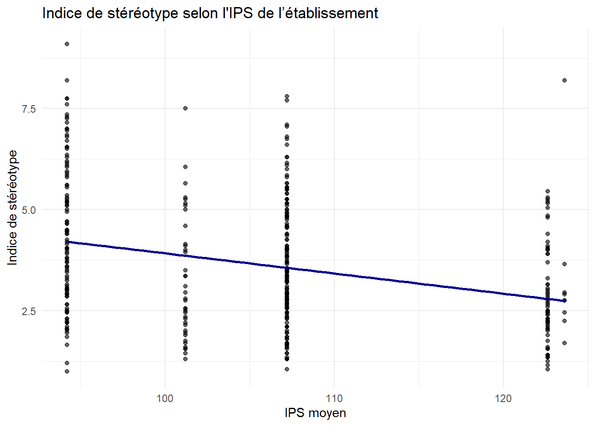
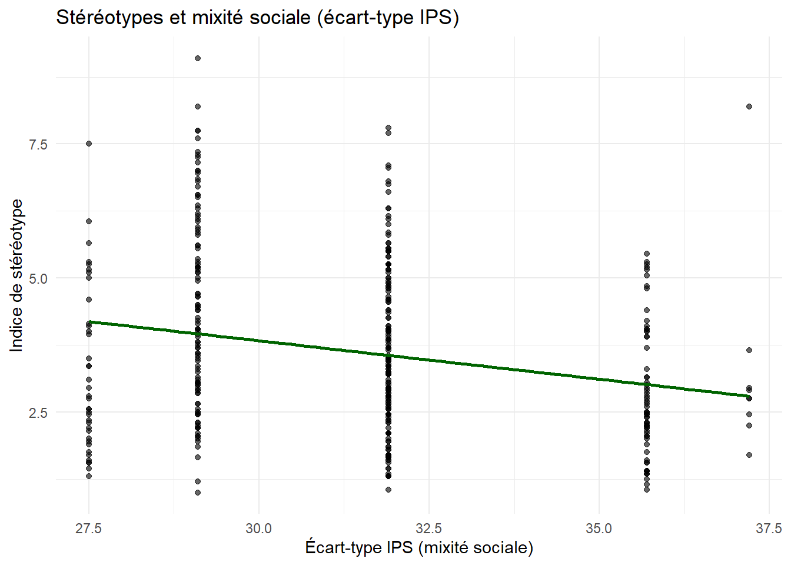
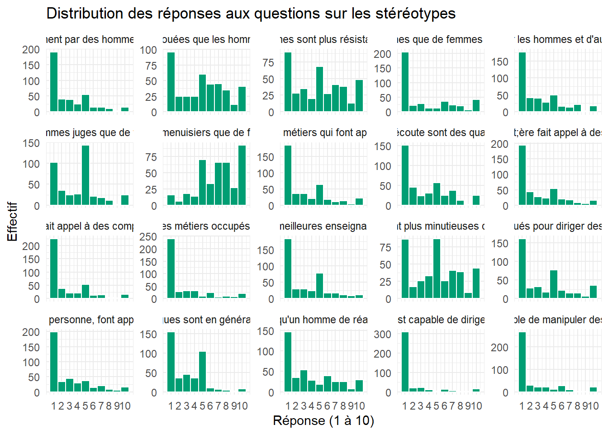
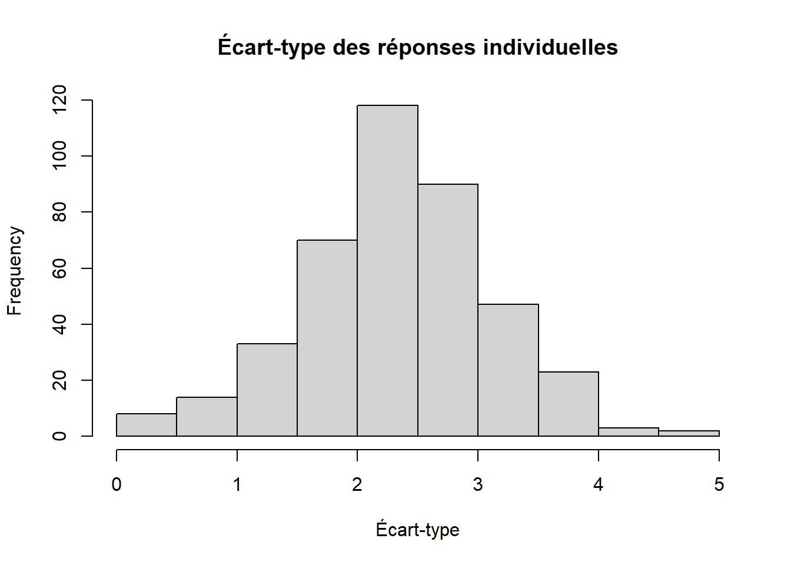
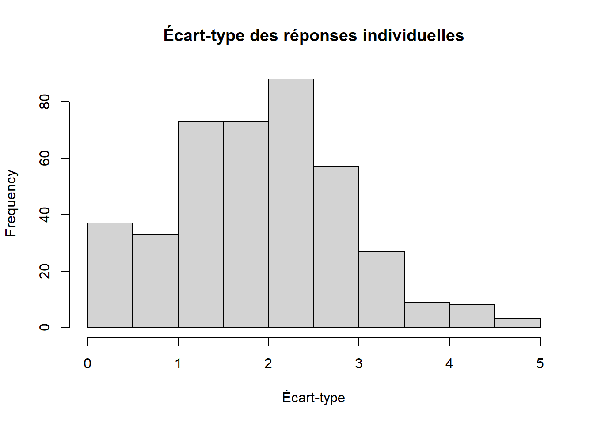

Pour pouvoir mettre en lumière les stéréotypes liées au genre dans le monde du travail chez les élèves, nous pouvons créer un indice de stéréotype. Cet indice se construit par la moyenne des réponses aux 20 questions par individu. Plus la moyenne est élevée, plus les réponses données par cet individu vont dans le sens des stéréotypes.
NB. Pour homogénéiser l’indice, certaines affirmations ont été inversées pour toujours avoir 10 = très stéréotypé.
Par la suite, nous pouvons étudier les corrélations entre indice de stéréotype et déterminants sociaux.
Résultats
Comparaison par genre
# A tibble: 3 × 4
Genre Moyenne SD n
<chr> <dbl> <dbl> <int>
1 Fille 3.01 1.29 232
2 Garçon 4.41 1.63 167
3 non concerné 4.66 2.43 9

Welch Two Sample t-test
data: Indice_stereotype by Genre
t = -9.1888, df = 304.36, p-value < 2.2e-16
alternative hypothesis: true difference in means between group Fille and group Garçon is not equal to 0
95 percent confidence interval:
-1.695786 -1.097583
sample estimates:
mean in group Fille mean in group Garçon
3.008405 4.405090
La moyenne féminine des indices de stéréotypes est de 3,01 tandis qu’elle est de 4,41 pour les garçons.
–> Boxplot
Le test t de Student (version de Welch, adaptée aux variances inégales) révèle une différence significative entre les filles et les garçons en ce qui concerne l’indice de stéréotype. On observe un p-value < 2.2e-16 : la différence observée est hautement significative statistiquement.
L’intervalle de confiance à 95 % de la différence entre les moyennes est : [-1,70 ; -1,10] : En moyenne, les garçons ont un indice de stéréotype entre 1,1 et 1,7 points plus élevé que les filles.
Comparaison selon le niveau d’étude
Dans un premier temps, nous pouvons étudier si l’indice de stéréotype et le niveau d’étude de l’élève émettent une corrélation.
Pearson's product-moment correlation
data: df_genre_classe$Indice_stereotype and df_genre_classe$Niveau_etude
t = -4.2518, df = 406, p-value = 2.634e-05
alternative hypothesis: true correlation is not equal to 0
95 percent confidence interval:
-0.2975850 -0.1116181
sample estimates:
cor
-0.2064654
Il existe une corrélation négative significative entre le niveau d’étude (de la 6e à la Terminale) et l’indice de stéréotype. Plus les élèves avancent dans leur parcours scolaire, plus leur vision des métiers semble moins stéréotypée. Même si le lien est modéré (r ≈ -0.21), il est statistiquement solide et va dans le sens d’une évolution positive avec l’âge/la maturité.
Nous pouvons à présent regarder s’il existe une différence statistiquement significative entre collégiens et lycéens relative à leur vision des métiers stéréotypés.
# A tibble: 2 × 4
Niveau Moyenne SD n
<chr> <dbl> <dbl> <int>
1 Collège 4.10 1.78 158
2 Lycée 3.31 1.44 250

Welch Two Sample t-test
data: Indice_stereotype by Niveau
t = 4.6829, df = 282.7, p-value = 4.396e-06
alternative hypothesis: true difference in means between group Collège and group Lycée is not equal to 0
95 percent confidence interval:
0.4568748 1.1194594
sample estimates:
mean in group Collège mean in group Lycée
4.099367 3.311200
Le test t de Student indique que les collégiens ont un indice de stéréotype significativement plus élevé que les lycéens. Avec une intervalle de confiance de 95%, la différence moyenne est estimée entre 0,46 et 1,12 points. On peut donc dire que les collégiens ont entre un demi-point et un point entier de plus en moyenne sur l’échelle de stéréotypes.
Cela rejoint notre résultat précédent qui a mis en lumière une corrélation signficativement négative du niveau d’étude avec l’indice de stéréotype des élèves. L’exposition à la diversité des parcours ou la maturité cognitive semblent pouvoir atténuer certains stéréotypes.
Comparaison selon l’Indice de Position Sociale
L’Indice de Position Sociale est un indicateur statistique qui permet de rendre compte de la composition sociale de l’établissement. Deux valeurs statistiques peuvent être analysées :
la valeur moyenne des IPS des élèves de l’établissement, qui mesure le degré moyen d’avantage social à l’apprentissage
l’écart-type associé à l’IPS des établissements, qui correspond à l’écart de conditions sociales au sein d’une école, pouvant servir de mesure de mixité sociale
Pearson's product-moment correlation
data: df_genre$Indice_stereotype and df_genre$IPS
t = -6.2613, df = 405, p-value = 9.747e-10
alternative hypothesis: true correlation is not equal to 0
95 percent confidence interval:
-0.3832177 -0.2058196
sample estimates:
cor
-0.2970801

L’analyse statistique révèle une corrélation négative significative entre l’Indice de Position Sociale (IPS) moyen des établissements et l’indice de stéréotype exprimé par les élèves (r = -0.30, p < 0.001). Autrement dit, plus l’IPS est élevé — reflétant un contexte social plus favorisé —, moins les élèves ont tendance à adhérer à des stéréotypes genrés sur les métiers. Cette tendance suggère une influence du milieu socio-éducatif sur la perception genrée du monde professionnel.
Pearson's product-moment correlation
data: df_genre$Indice_stereotype and df_genre$Ecart_type_IPS
t = -4.7632, df = 405, p-value = 2.659e-06
alternative hypothesis: true correlation is not equal to 0
95 percent confidence interval:
-0.3203548 -0.1361677
sample estimates:
cor
-0.2303231

Une corrélation négative significative est observée entre l’écart-type de l’IPS par établissement — indicateur de la mixité sociale — et l’indice de stéréotype des élèves (r = -0.23, p < 0.001). Cela suggère que dans les établissements présentant une plus grande diversité sociale, les élèves expriment en moyenne moins de stéréotypes de genre. Cette relation pourrait refléter un effet bénéfique de la mixité sociale sur la déconstruction des représentations genrées du monde professionnel.
Biais
Biais de désirabilité
Les élèves auraient pu répondre selon ce qu’ils pensaient qu’on attendait d’eux, plutôt que ce qu’ils pensent vraiment.
Pour cela, on peut d’abord regarder la distribution des réponses. Si on observe beaucoup de 1/10, il pourrait avoir une sur-réponse de ce qui est vu comme socialement acceptable.

On voit qu’en majorité, les élèves ont bien répondu dans les extremas. Attention ! Les élèves n’ont pas répondu en majorité par Pas du tout d’accord. Cela advient de la manipulation précédente ayant inversé la réponse à certaines questions. Cela ne contredit néanmoins pas la tendance majoritaire de répondre par les possibilités à l’extrême, qui peuvent être vu comme des “bonnes” réponses.
On peut aussi analyser les écart-types de réponses par élève pour déceler la possibilité de réponse automatique.

Curieusement, l’écart-type de réponses des élèves se concentre autour de 2-3. Cela signifie que les élèves varient leur réponse en moyenne, donc l’effet de biais de désirabilité sociale est plus limité.
Néanmoins, il faut tenir compte des questions pouvant induire un éventuel biais d’interprétation des échelles. Cela peut avoir pour conséquence de centrer les réponses autour de 5. Pour certaines questions, cocher 1 = Pas du tout d’accord pouvait signifier pour l’élève que l’inverse de l’affirmation est vrai. On observe en effet sur la distribution par question au-dessus, que certaines questions concentrent les réponses “moyennes” autour de 5, comme par exemple :
“Il y a plus d’hommes menuisiers que de femmes menuisières.”
“Les psychologues sont en général des hommes”
“En général, les hommes sont plus résistants que les femmes.”
“En général, les femmes sont plus douées que les hommes pour prendre soin des enfants.”
“Il y a plus d’hommes juges que de femmes juges.”
“Les femmes sont plus minutieuses que les hommes.”
Si on enlève ces questions de la liste et on recalcule l’écart-type de réponse par élève, on peut obtenir une distribution moins biaisée.

On observe alors un décalage de l’écart-type moyen des réponses vers la gauche, avec une concentration autour de 1-2. Les élèves varient donc moins leur réponse en l’absence de questions à interprétation ambiguë.
Analyse par catégories de questions
Méthodologie
Pour affiner l’analyse, on peut distinguer trois types de questions posées lors de l’enquête :
Questions factuelles, vérifiables par les données
Questions d’opinion, liées à des jugements de valeur, préjugés ou représentations
Au sein des questions d’opinion, on peut distinguer à nouveau des questions liés aux stéréotypes en général et ceux liés au monde du travail.
Questions à interprétation ambiguë ou qui abordent d’autres concepts
On peut alors définir quatre listes à partir de cette catégorisation pour analyser les différences de sensibilité des élèves par rapport à celle-ci. On recrée les différentes indices comme dans la première partie.
## Calcul des indices factuel et stéréotypes :df_genre$Indice_factuel <-rowMeans(df_genre[, questions_factuelles], na.rm =TRUE)df_genre$Indice_stereotype_gen <-rowMeans(df_genre[, questions_stereotypes_2], na.rm =TRUE)df_genre$Indice_stereotype_met <-rowMeans(df_genre[, questions_metiers], na.rm =TRUE)df_genre$Indice_ambigue <-rowMeans(df_genre[, questions_ambiguës_2], na.rm =TRUE)
Résultats
Corrélation entre les indices catégorielles
En premier lieu, on peut essayer de détecter une corrélation dans les résultats relatifs aux questions de stéréotype de type général et professionnel, puis dans les résultats aux questions de stéréotypes de métier et factuelles (comparer ces deux indices semblent plus cohérents dans la mesure où les questions factuelles portent sur des statistiques de métiers).
cor.test(df_genre$Indice_stereotype_gen, df_genre$Indice_stereotype_met, use ="complete.obs")
Pearson's product-moment correlation
data: df_genre$Indice_stereotype_gen and df_genre$Indice_stereotype_met
t = 23.129, df = 406, p-value < 2.2e-16
alternative hypothesis: true correlation is not equal to 0
95 percent confidence interval:
0.7088121 0.7930415
sample estimates:
cor
0.7540097
On trouve une corrélation positive très forte et significative entre les réponses données relativement aux stéréotypes généraux et professionnels (r = 0.75, p < 0.001). On peut en déduire qu’à plus de 75% des cas, les élèves qui ont répondu de manière à confirmer les stéréotypes dans la vie courante ont aussi répondu ainsi dans le cas spécifique du monde du travail.
cor.test(df_genre$Indice_factuel, df_genre$Indice_stereotype_met, use ="complete.obs")
Pearson's product-moment correlation
data: df_genre$Indice_factuel and df_genre$Indice_stereotype_met
t = 11.798, df = 406, p-value < 2.2e-16
alternative hypothesis: true correlation is not equal to 0
95 percent confidence interval:
0.4292370 0.5741849
sample estimates:
cor
0.5052661
Une corrélation positive significative est observée entre l’indice factuel et l’indice de stéréotypes métiers (r = 0,51 ; p < 0,001). Autrement dit, plus les élèves perçoivent une répartition genrée dans le monde professionnel (ex. : “Il y a plus d’hommes menuisiers que de femmes menuisières.”), plus ils ont tendance à exprimer des stéréotypes sur les métiers. Ce lien suggère une possible confusion entre des constats sociaux et des jugements normatifs, où ce qui est perçu comme une réalité devient, pour certains élèves, une forme de justification implicite.
Comparaison selon le genre, niveau et IPS du nouvel indice de stéréotype
On peut vérifier comment les différences entre scores de stéréotypes (maintenant affinés) selon le genre, niveau et IPS ont évoluées par rapport à l’analyse initiale.
On compare les deux indices de stéréotypes entre filles et garçons avec un modèle ANOVA à deux facteurs. Ceci va permettre de comparer les moyennes des groupes et déterminer si au moins une moyenne est significativement différente des autres.
# Test ANOVA## Passer en format longdf_long <- df_genre |>select(Genre, Indice_stereotype_gen, Indice_stereotype_met) |>pivot_longer(cols =starts_with("Indice"),names_to ="Type_indice",values_to ="Valeur") |>mutate(Type_indice =ifelse(Type_indice =="Indice_stereotype_gen", "Général", "Métiers"))# Enlever les NA et "non concerné"df_long <- df_long |>filter(Genre =="Fille"| Genre =="Garçon")# ANOVA à deux facteursres_aov <-aov(Valeur ~ Genre * Type_indice, data = df_long)summary(res_aov)
La variable Genre mesure la différence générale entre filles et garçons, tout indice confondu. On retrouve le résultat de la première partie : les garçons ont un niveau de stéréotypes significativement plus élevé que les filles.
La variable Type_indice mesure si le niveau de stéréotype est plus fort dans les représentations générales par rapport au monde professionnel (sans distinction de genre). Ici, on trouve que Type_indice est fortement significatif (p < 2e-16), don les représentations stéréotypés sont effectivement plus forts en général que dans le monde du travail.
La variable d’interaction Genre × Type_Indice indique si l’écart entre les deux indices est différent selon le genre, c’est-à-dire s’il y a une véritable différence structurelle entre la vision des filles et des garçons. Or, on trouve un écart non significatif entre les deux indices. Il s’ensuit que filles et garçons distinguent les sphères pro/générale de manière comparable.
## Corrélation entre indice de stéréotype et niveaux de classedf_genre_classe <- df_genre |>mutate(Niveau_etude =case_when(str_detect(Classe, "5e") ~1,str_detect(Classe, "4e") ~2,str_detect(Classe, "3e") ~3,str_detect(Classe, "2nde") ~4,str_detect(Classe, "1ère") ~5,str_detect(Classe, "Terminale") ~6,TRUE~NA_real_ ))cor.test(df_genre_classe$Indice_stereotype_met, df_genre_classe$Niveau_etude, use ="complete.obs")
Pearson's product-moment correlation
data: df_genre_classe$Indice_stereotype_met and df_genre_classe$Niveau_etude
t = -4.9627, df = 406, p-value = 1.025e-06
alternative hypothesis: true correlation is not equal to 0
95 percent confidence interval:
-0.3286011 -0.1454378
sample estimates:
cor
-0.2391457
cor.test(df_genre_classe$Indice_stereotype_gen, df_genre_classe$Niveau_etude, use ="complete.obs")
Pearson's product-moment correlation
data: df_genre_classe$Indice_stereotype_gen and df_genre_classe$Niveau_etude
t = -3.8959, df = 406, p-value = 0.0001144
alternative hypothesis: true correlation is not equal to 0
95 percent confidence interval:
-0.28172716 -0.09449162
sample estimates:
cor
-0.1898348
cor.test(df_genre_classe$Indice_factuel, df_genre_classe$Niveau_etude, use ="complete.obs")
Pearson's product-moment correlation
data: df_genre_classe$Indice_factuel and df_genre_classe$Niveau_etude
t = 1.4031, df = 406, p-value = 0.1614
alternative hypothesis: true correlation is not equal to 0
95 percent confidence interval:
-0.02780806 0.16543308
sample estimates:
cor
0.06946411
# Test ANOVA## Passer en format longdf_long <- df_genre |>select(Niveau, Indice_stereotype_gen, Indice_stereotype_met) |>pivot_longer(cols =starts_with("Indice"),names_to ="Type_indice",values_to ="Valeur") |>mutate(Type_indice =ifelse(Type_indice =="Indice_stereotype_gen", "Général", "Métiers"))# ANOVA à deux facteursres_aov <-aov(Valeur ~ Niveau * Type_indice, data = df_long)summary(res_aov)
Df Sum Sq Mean Sq F value Pr(>F)
Niveau 1 164.3 164.34 49.456 4.31e-12 ***
Type_indice 1 312.0 312.05 93.908 < 2e-16 ***
Niveau:Type_indice 1 0.0 0.02 0.006 0.936
Residuals 812 2698.2 3.32
---
Signif. codes: 0 '***' 0.001 '**' 0.01 '*' 0.05 '.' 0.1 ' ' 1
La corrélation entre les indices de stéréotype et les niveaux de classe reste relativement similaire au résultat de la première partie. On trouve une nouvelle fois une plus forte corrélation de l’indice liée au métier avec les niveaux de classe par rapport à l’indice général.
En revanche, on observe que l’indice factuel (qui recense la moyenne sur les questions chiffrables) n’est pas corrélé (coefficient proche de 0, p-value > 0.1) avec le niveau de classe.
A nouveau l’ANOVA à deux facteurs recense une différence significative entre collégiens et lycéens toute indice confondue. De même, le niveau de stéréotype est plus fort dans les représentations générales par rapport au monde professionnel (cf. résultat ANOVA ~ Genre). Cependant, l’interaction entre les deux variables donne à nouveau une différence non significative : l’écart de stéréotype général/métier n’est pas significativement différente entre collégiens et lycéens.